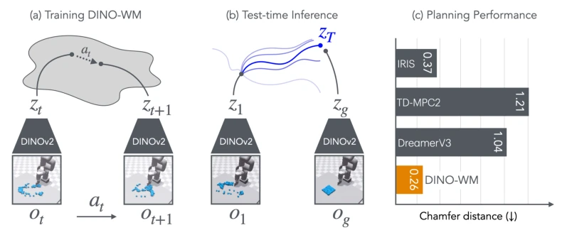
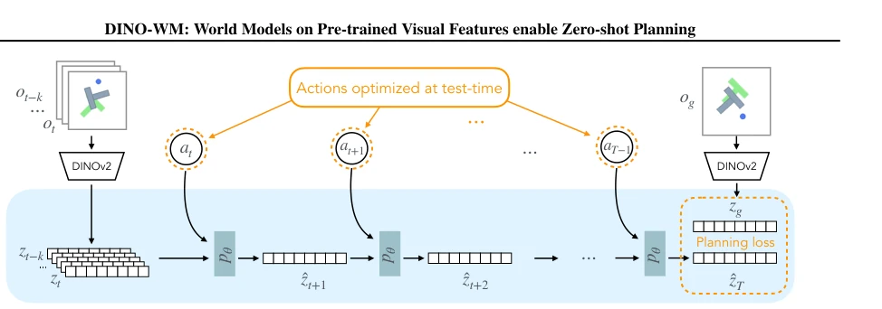
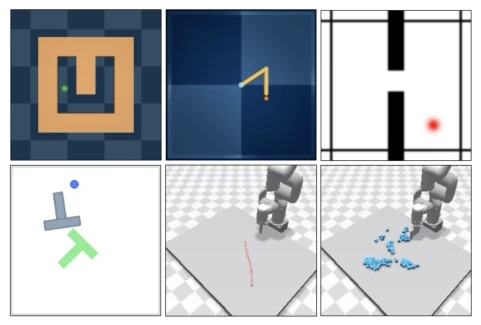
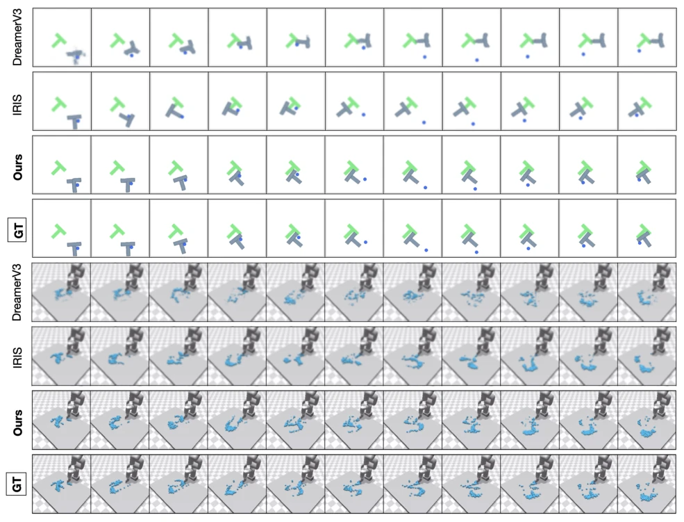
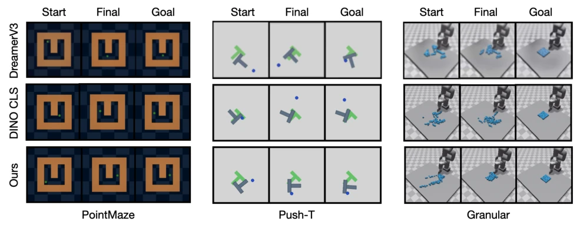
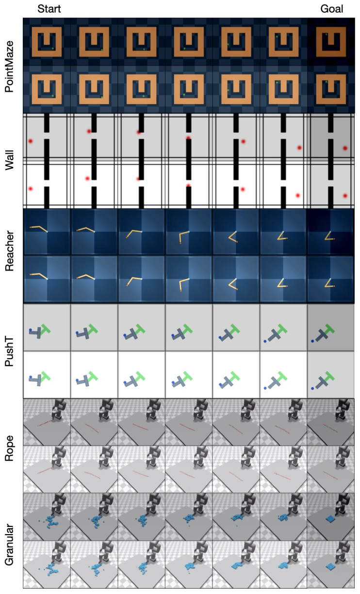
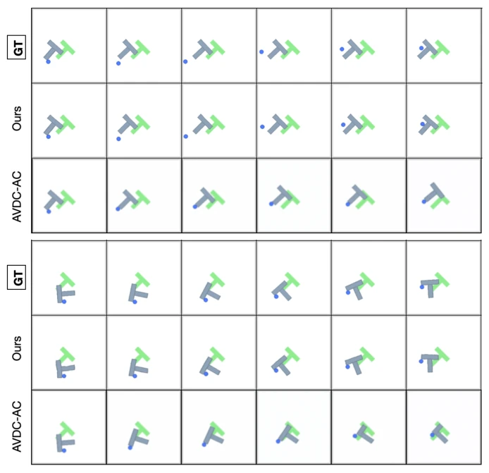
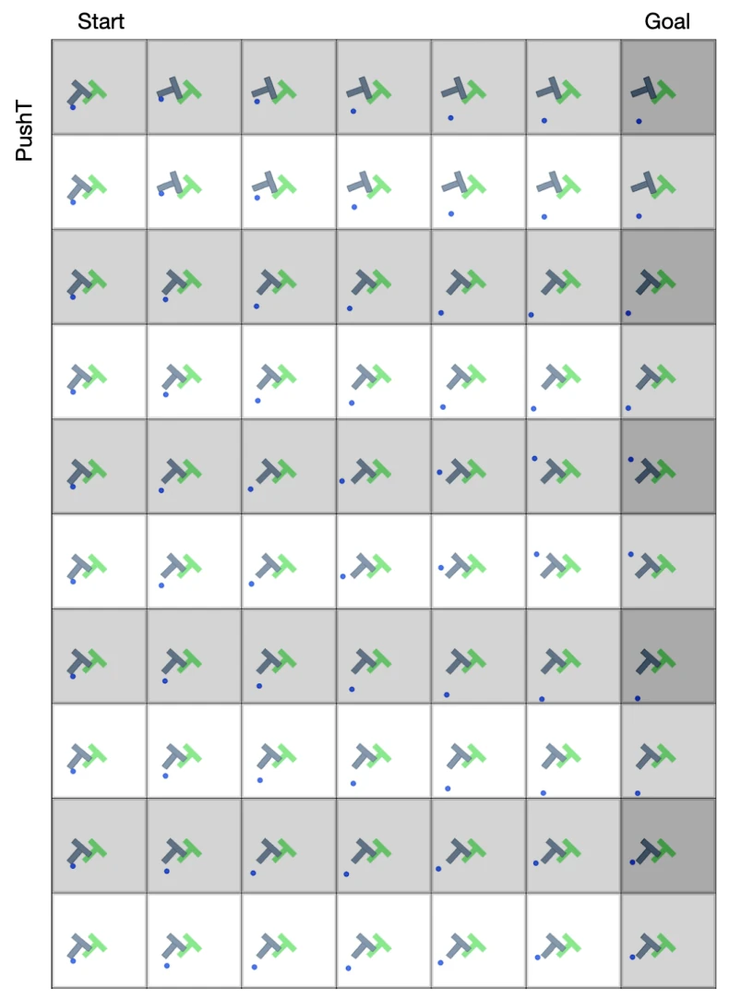
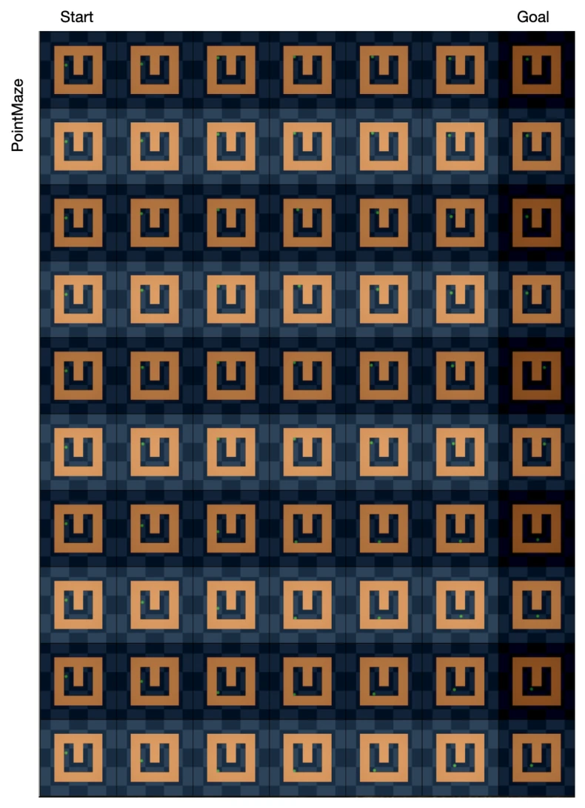

这篇论文把 DINOv2 的 patch features 直接拿来当世界模型的输入，省去了从头学编码器的麻烦，属于“站在巨人肩膀上偷懒”的典型。作者声称能 zero-shot planning，确实比那些还要学 reward 或者 inverse model 的 offline 方法清爽多了。但是，这本质上还是“拿来主义”，把预训练视觉模型当黑盒，虽然效果在 PushT 这种操作任务上吊打 DreamerV3 和 TD-MPC2，但代价是必须得有 ground truth 的动作数据，这在实际机器人里往往很难搞，毕竟互联网视频很难提供精确动作。而且 decoder 是可选的，虽然省了计算，但要是没有像素重建，怎么保证 latent space 真的懂物理？反正 LPIPS 刷得高，看着挺唬人。总的来说，是个聪明的工程 trick，但离真正的通用世界模型还差口气，毕竟离线数据覆盖不足时依然会崩，且依赖预训练模型本身的质量，如果 DINOv2 没学到关键特征，这模型也就废了。
This paper directly uses DINOv2's patch features as input for the world model, saving the trouble of learning an encoder from scratch, which is a typical example of "standing on the shoulders of giants to be lazy". The authors claim zero-shot planning, which is indeed much cleaner than offline methods that still need to learn rewards or inverse models. However, this is essentially "taking what is given", treating pre-trained vision models as black boxes. Although the performance significantly outperforms DreamerV3 and TD-MPC2 on manipulation tasks like PushT, the cost is requiring ground truth action data, which is often difficult to obtain in real robots, after all, internet videos are hard to provide precise actions. Moreover, the decoder is optional, saving computation, but without pixel reconstruction, how can one guarantee the latent space truly understands physics? Anyway, LPIPS scores are high, looking quite impressive. Overall, it is a smart engineering trick, but still falls short of a true general world model, after all, it still collapses when offline data coverage is insufficient, and depends on the quality of the pre-trained model itself; if DINOv2 fails to learn key features, this model is rendered useless.
研究动机Motivation
现有世界模型面临两大困境：在线方法依赖持续交互，难以复用 (Hafner et al., 2024)；离线方法则需专家演示 (Pathak et al., 2018)、逆模型 (Du et al., 2023) 或奖励函数 (Ding et al., 2024)，限制了泛化性。像素级重建计算昂贵且易过拟合任务特征 (Ko et al., 2023)。IRIS 等方法 (Micheli et al., 2023) 在复杂操作任务中表现不佳，因需学习状态估计或依赖奖励。本文旨在构建不依赖任务特定信息、仅凭离线轨迹即可进行视觉推理的模型，利用预训练特征解耦任务信息，实现更通用的规划，避免重新训练策略。特别是针对需要精确空间理解的操作任务，现有方法往往因特征压缩丢失空间信息而失效，导致在未见配置下泛化能力差，无法处理形变物体等复杂动态。
Existing world models face two dilemmas: online methods rely on continuous interaction and are difficult to reuse (Hafner et al., 2024); offline methods require expert demonstrations (Pathak et al., 2018), inverse models (Du et al., 2023), or reward functions (Ding et al., 2024), limiting generalization. Pixel-level reconstruction is computationally expensive and prone to overfitting task features (Ko et al., 2023). Methods like IRIS (Micheli et al., 2023) perform poorly in complex manipulation tasks due to the need to learn state estimation or rely on rewards. This paper aims to construct a model that does not rely on task-specific information and can perform visual reasoning based solely on offline trajectories, using pre-trained features to decouple task information, achieving more general planning, and avoiding policy retraining. Especially for manipulation tasks requiring precise spatial understanding, existing methods often fail due to feature compression losing spatial information, leading to poor generalization on unseen configurations and inability to handle complex dynamics such as deformable objects.

Figure 1. We present DINO-WM, a method for training visual models by using pretrained DINOv2 embeddings of image frames (a). Once trained, given a target observation oT , we can directly optimize agent behavior by planning through DINO-WM using model predictive control (b). The use of pretrained embeddings significantly improves performance over prior state-of-the-art world models (c).
Overall divided into two stages: training and planning. During training, the observation model uses frozen DINOv2 to encode images into patch embeddings $z_t$, preserving spatial structure. The Transition Model adopts a ViT architecture, inputs historical latent states and actions, predicts the next frame latent, and uses a causal attention mechanism to capture temporal dependencies. The Decoder is optional, used only for visualization, decoupled from the predictor to avoid pixel reconstruction costs. In the planning stage, given current and target observations, optimize the action sequence in latent space via MPC, minimizing the MSE distance between predicted target and true target latents, using the CEM algorithm. The core innovation lies in utilizing DINOv2's patch features rather than global vectors, and performing prediction entirely in latent space without pixel reconstruction, achieving task-agnostic dynamic modeling. Additionally, actions are mapped via MLP and concatenated to patches, enhancing action conditioning. Training employs teacher forcing to ensure prediction consistency.

Figure 2. Architecture of DINO-WM. Given observations ot−k:t, we optimize the sequence of actions at:T −1 to minimize the predicted loss to the desired goal og. All forward computation is done in the latent space z. Here pθ indicates DINO-WM’s dynamics model, which is used for making future predictions.
Tested on 6 environments including Maze, PushT, Granular. Baselines include IRIS, DreamerV3, TD-MPC2, AVDC. Metrics include Success Rate (SR), Chamfer Distance (CD), and LPIPS. Results show DINO-WM significantly outperforms baselines on manipulation tasks (PushT, Granular), with SR improving by 45%. Generalization ability is stronger on unseen configurations (WallRandom). The LPIPS metric shows prediction quality is 56% higher than SOTA. Ablation experiments indicate patch features are more suitable for manipulation tasks than R3M or ResNet's global features. On Rope and Granular, the CD metric is also better than other methods, proving effectiveness in modeling deformable objects. In terms of speed, inference is faster than traditional simulation, especially in deformable environments. Compared to AVDC, DINO-WM is better in physical rationality, avoiding physical hallucinations in generated videos.

Figure 3. We evaluate DINO-WM on six environment suites, from left to right, top to bottom: Maze, Reach, Wall, Push-T, Rope Manipulation, and Granular Manipulation.

Figure 4. Open-loop rollouts of world models on Push-T and Granular. Given the first frame and action sequence, each model predicts future frames, reconstructed by its decoder. For each environment, the bottom row denotes the ground truth. DINO-WM (Ours) rollouts are bolded and are visually indistinguishable from the ground truth observations.

Figure 8. Planning visualizations for PointMaze, Push-T, and Granular, on randomly sampled initial and goal configurations. The task is defined by Start and Goal, denoting the initial and goal observations. Final shows the final state the system arrives at after planning with each world model. For comparison, we show the best performing world models DINO CLS and DreamerV3.

Figure 9. Trajectories planned with DINO-WM on all six environments. For each environment, the top (shaded) row shows the environment’s observation after executing the planned actions, and the bottom row shows the world model’s imagined observations.
其他图片Other Figures

Figure 7. Open-loop rollout on PushT with DINO-WM and action-conditioned AVDC (AVDC-AC). For each trajectory, the model is given the first frame as well as sequence of actions. The world models performs open-loop rollout with these actions.

Figure 10. Trajectories planned with DINO-WM on PushT with the same initial states but different goal states.

Figure 11. Trajectories planned with DINO-WM on PointMaze with the same initial states but different goal states.